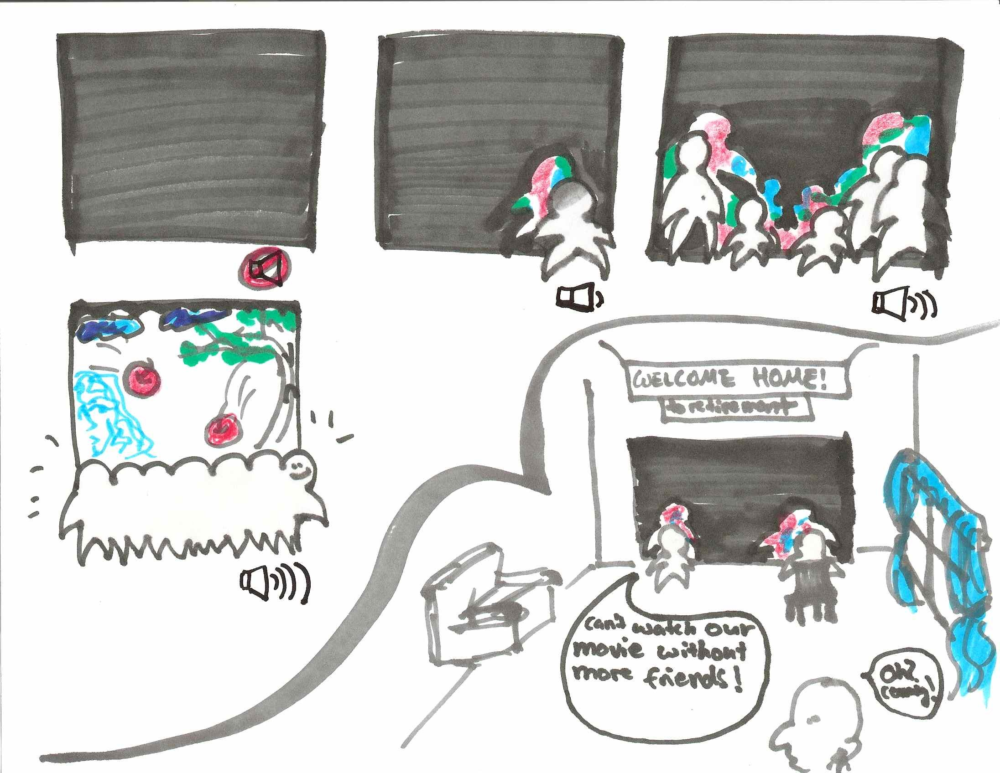
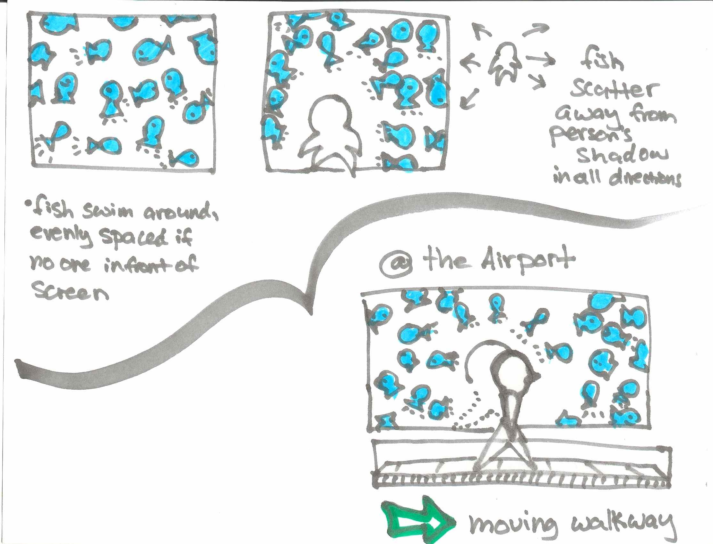
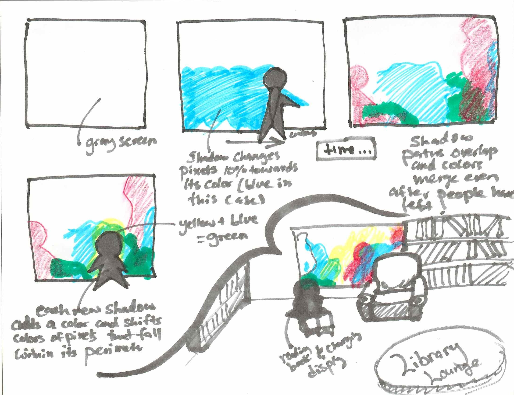

CS247 P2 - Shadow Boxing
- Kseniya Charova |
- Michelle Gumport |
- Anwar Hahn |
- Wendy Mu
The Fishbowl
Click here to experience the FishbowlOur virtual fishbowl allows users to interact with virtual fish. If the fish come in contact with a shadow, they will swim away. If trapped for too long, the fish will get upset and disappear.
The virtual fishbowl promotes social interaction in public areas where people are likely to be waiting or lounging around in silence. Possible venues include dorm lounges, the doctor's office, or an airport waiting room. Without the presence of a shadow, the fishbowl provides passive entertainment by mimicking the behavior of a real fish tank. However, the fishbowl is not very interesting unless there are shadows in the water, which cause the fish to scurry away. Multiple people can work together to form interesting shapes with their bodies to make the fish swim in interesting patterns.
As soon as one person begins interacting with the Fishbowl, more people will join and start conversations. Since the Fishbowl is displayed on a large wall, people will have the option of standing as far apart from each other as they feel comfortable before moving closer in order to work together. This creates a natural environment where people can meet and get to know each other without experiencing awkward pauses or silences.
We expect the relaxed, game-like nature of the fishbowl to be especially effective at engaging younger audiences who are eager to play and meet each other, but perhaps a little shy to do so.
Watch our Demo!
Source Code
The code for Fishbowl lives in demo-stanford.html and demo-stanford.js
Link to Github RepoThe Design Process
Initial Brainstorm
List 100 ideas
- shadow puppet theater
- dress people up
- stage games (rock paper scissors -- make the shadows move when tournament is won)
- workout shadows--copy your form!
- record dancer shadows as they’re dancing, then flip them and make a dance “collage”
- see how close shadows are to what they should be
- modifying aspect ratio of someone’s shadow
- game to use shadow to move around in non-standard dimensions
- shadow math: do math operations on shadows. so 1*2 = clone your shadow
- shadow ninjas where your shadow amplifies normal motion into ultimate ninja
- shadow ping pong game where player bodies are mapped to the screen and you have to move arms so shadow moves corresponding part and hits ball
- shadows bouncing beach ball around
- whatever you do, your shadow does the opposite (really freaky)
- shadow augments your motions to move around a virtual reality world
- shadow interacts with a projected background image and performs different actions based on the image content (pets a bunny that enters the scene, frolics in a meadow, catches a taxi in a city)
- what to do with overlapping shadows? make one hold the other up cool colors or something whenever there’s an overlap shadow monsters by melding shadows (can create shadow blob)
- shadow finger painting or shadow body painting moving your hands more and more would change the color draw a smiley face on your shadow face, and then when the shadow moves, the smiley face moves too!
- random objects can make really cool shadow images when you move them around
- memory game where you find the two matching objects
- tic tac toe
- replace body parts with claws
- create different versions of yourself--add extra arms, and then move them all around
- gravity well shadows body gets stretched out and dragged away near these particular points
- portal shadows
- have a 3D world and show 2D slices of that world on screen. Shadow can interact with the 2D slice of the world to solve a maze, and the 3D world can be rotated to show a 2D slice in any direction
- Shadow fractals
- project shadow onto 2d object in 3d space. when you move that object, project the shadow into the 3d space
- keep history for a couple minutes then reset collage of people in time walking and interacting sparks every time there’s a collision shadows fade away over time can interact with people who have been there before
- electrostatic ball simulations
- simulate walking-by something other than a flat screen
- what if our shadows were stick figures?
- every time shadows hug, hearts come out
- shadow writing
- Proximity: The closer you walk to the screen, the deeper the imprint from your shadow will be. Could use this in sand or water environment.
- Walk by, and have shadow foot prints trail your shadow
- painting/text covered by a black screen. only shows up where your shadow is
- more people in scene->change color all the way up to 100%
- add more dimensions
- tug of war, based on the number of people on one side or the other
- show shadow accurately, then over time it melts into a blob
- take a picture of your shadow, then you can manipulate it and print it out shadow cut outs
- positive and negative shadows: negative shadows erase, positive shadows draw; every other person is a different type
- make everyone an elephant or any type of animal
- attach balloons to people’s shadows, and the goal is not to float away
- make shadow world upside down
- if you come in from the left, shadow enters from the right
- strings attached, so it looks/feels like your shadow is a puppet
- fly through the world! by sticking out your arms
- fruit ninja for shadow
- kama sutra tutorial acted out by shadows
- apple logo, use face as cutout
- record shadow dancing, then put it in ballroom or on beach
- change sound based on how fast shadows are moving
- map different parts of the screen to different notes. whatever parts of the screen your body is covering are the notes that are playing pick notes that sound ok together closeness determines which notes get played
- snap pictures of people posing, stick them to spider web
- shadow melts into quicksand if you don’t move
- make everyone into bathroom symbol
- make them jump to get things shadow gets happy and dances around if it reaches it object/ball could fall, and then something pretty could happen (colors?)
- goal: keep totem pole from falling, people need to work together to keep it from falling
- what if webcam is above or below us? show crowd from birds eye view
- small multiple views
- count number of shadows that pass by estimate when train is going to come based on number of shadows on screen
- different lenses, distort shadows based on lens
- make everyone look pregnant
- shadow’s center of mass is in full opacity color, which tapers out around the edges
- shadow spins on pinwheel
- take snapshot of each person walking by, “evolution” diagram
- shadow clay, never increase size of shadow
- fishbowl--whenever you walk in, fish scurry away
- outlines instead of shadows
- heatmap: longer you stay in front of the screen, the warmer it will be
- have people enter hot and use newton’s law of cooling ot change color over time
- replace shadow with letter that looks most like that shadow
- ways to stretch out body and shrink it down (“wiggly arms”)
- play “I am a tree”
- laser pointer gets activated when you come close to the screen. Once it finds you, it starts shooting bullets. You can manipulate the shadow to avoid matrix bullets
- stationary lasers, have to walk through and avoid them
- comic book style reactions when things interact
- shadows of bond girls walking around, and you interact with them
- people start out on screen as different colors, then when they overlap the colors blend into one until they walk off screen.
- shadow tag to change colors: everyone is black except one person who is red. The red person has to touch other shadows to turn them red as well. Once everyone is the same color, a random shadow turns blue and the game continues.
- Falling shadow, slowly rotating imitating whatever the person is doing
- Canvas is a stack of colored paper. Shadow arms can be used to make cuts in the top most visible layer. Use arms to cut out layers and make cool designs
- Start canvas as grey. Each shadow that moves on screen shifts the grey pixels closer to its own color (red, blue, green, etc.) by some small amount
- Have motion across canvas be represented by a swirl of color, display on top of each other
- give everyone elf ears
- more people scrunch down to give centipede legs, until it can get up and walk offscreen
- put a treadmill parallel to the screen. Your shadow is in a 2D platformer game. As you run, the shadow runs across the screen. Player has to jump (on treadmill) to avoid obstacles.
- hall of mirrors-style shadow distortions
- game where things fall and you have to catch them
- any two shadows get attached by springs. If people walk farther away from each other, the spring stretches. Once they go off screen, the spring and shadows snap together and boing.
- pinhole camera. The longer a person stands still, the more in focus their shadow will be. The other moving shadows will be blurred.
- have a photo of Marilyn Monroe behind a curtain and people can use shadows to draw open curtain
- People walk by and create ripples
- People are outlines. If outline is moving it doesn’t do anything. If person stops, the outline gets radiated out (with sound)
- Volume control: Play sound in background. The more area is covered with shadows, the louder the sound plays.
- Wind chimes, people moving cause ripples, which cause wind chimes to play. Volume based on size/number of ripples
- DJ Shadow can manipulate 2D shadow turntable and manipulate music. (setting:party)
- different positions/people are different instrumental/rhythmic tracks that play on top of each other
- Mount camera above and show the paths that people take under it (project the paths downwards and see if that changes the way people walk)
- Display a cute animal on screen that you can interact with on screen (poke it with your shadow and it will run around)
Most interesting 20
We sketched out 20 of our ideas, then narrowed the list down to the top 3. Click here to see our sketches.
Cross-outs indicate ideas that are too difficult to implement due to either the limitations of our shadow capturing technology or time constraints.
-
dress people up -
game to use shadow to move around in non-standard dimensions -
shadow ninjas where your shadow amplifies normal motion into ultimate ninja - gravity well shadows body gets stretched out and dragged away near these particular points
-
keep history for a couple minutes then reset collage of people in time walking and interacting shadows fade away over time can interact with people who have been there before - Proximity: The closer you walk to the screen, the deeper the imprint from your shadow will be. Could use this in sand or water environment. (if we have depth information)
- painting/text covered by a black screen. only shows up where your shadow is
- more people in scene->change color all the way up to 100%
- tug of war, based on the number of people on one side or the other
- map different parts of the screen to different notes. whatever parts of the screen your body is covering are the notes that are playing pick notes that sound ok together closeness determines which notes get played
-
snap pictures of people posing, stick them to spider web -
shadow’s center of mass is in full opacity color, which tapers out around the edges - fishbowl--whenever you walk in, fish scurry away
- stationary lasers, have to walk through and avoid them
- people start out on screen as different colors, then when they overlap the colors blend into one until they walk off screen.
- Start canvas as grey. Each shadow that moves on screen shifts the grey pixels closer to its own color (red, blue, green, etc.) by some small amount
- put a treadmill parallel to the screen. Your shadow is in a 2D platformer game. As you run, the shadow runs across the screen. Player has to jump (on treadmill) to avoid obstacles.
- pinhole camera. The longer a person stands still, the more in focus their shadow will be. The other moving shadows will be blurred.
-
DJ Shadow can manipulate 2D shadow turntable and manipulate music. (setting:party) -
different positions/people are different instrumental/rhythmic tracks that play on top of each other
Top 3 ideas.
- Silhouette Movie Theater 
- Fish Bowl 
- Pixel Art 
Purpose: Get people to interact with each other in a social environment. Many people often forgo seeing their friends in favor of staying at home and watching TV. Although movies are fun, watching them alone can get lonely. Our design forces people to watch TV together. The film will be playing on a large screen, behind a virtual black curtain. The content of the film will only be visible in areas with shadows. Large groups of people will contribute to a large shadow surface area, which will reveal more of the film content. In addition, the sound will also increase in volume with larger shadow surface areas, so people will have to sit close together in order to hear the movie.
Venues: Since this activity requires a quiet and leisurely environment, we suggest using lounges and quiet entertainment rooms to display it. Retirement home living rooms as well as dorm lounges would be ideal places to offer people casual entertainment while encouraging social interaction.
Purpose: The purpose of the Fishbowl is to g et people to interact with one another while lounging around in waiting areas. The Fishbowl can act as both a relaxing passive source of entertainment, as well as an active medium of interaction between strangers. In the absence of shadows, the Fishbowl mimics real fish swimming around in a fish tank. However as soon as shadows enter the water, the fish will scurry away. People can work together and interact to create interesting swimming patterns.
Venues: Leisurely waiting areas where people are likely to meet strangers but may be too afraid to introduce themselves. Some examples include dorm lounges, airport waiting rooms, doctor's office waiting rooms.
Purpose: The purpose of Pixel art is to create a beautiful display of colors and teach people about how colors combine and together. The screen will begin as a gray box, and each person that walks by will cast a shadow on the screen. Each shadow will shift the pixel colors within its perimeter a small amount towards its absolute color. For example, if a person had a blue shadow, it would shift all the pixels in its path a little bit closer to blue. The history of every person who walks by the display will be recorded as a color imprint on the screen. The more people walk by, the more colorful and interesting the display will become.
Venues: Locations where people are likely to pass by and glance at the display but not stay for too long (We don't want people to "draw over" everyone else's color imprints by standing in front of the screen for too long. The idea is to observe the history of people walking through by their color imprints. Possible venues include libraries, office building halls, airport terminals, and shopping malls.